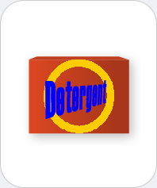

|  |
Laundry Detergent
Chemicals you may find: Oleic acid Linoleic acid Stearic acid EDTA Citric acid Calcite Sodium hypochlorite Hydrogen peroxide Stilbene |
| Laundry detergents are liquids or powders that in the process of washing remove stains from clothing. They may contain surfactants, enzymes, bleaches, fragrances, water softeners and others. Surfactants, often salts of fatty acids such as linoleic, stearic and oleic acid, lower the surface tension of water. Chemically they often have long hydrophobic hydrocarbon chains and hydrophilic "heads." This composition allows for the formation of so-called micelles, balls of surfactant where the chains point to a dirt particle and the heads point to the water. Thus dirt and grease particles can be dissolved in water. Enzymes are added to digest proteins, fats or carbohydrates. Oxygen and chlorine based bleaches (e.g., sodium hypochlorite) may be included to oxidize and destroy dirt. Optical brighteners such as stilbene absorb light in the ultraviolet region and give white clothing a "whiter" appearance. | |